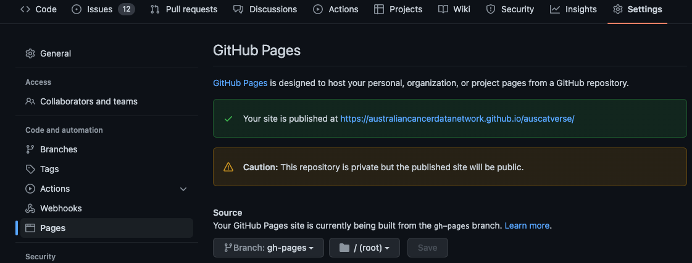

Sphinx Installation & Setup#
This guide outlines the steps required to setup and install Sphinx documentation within our AusCAT repositories. Appropriate extensions are installed enable using Markdown as the default documentation syntax. The Furo theme is also applied.
The following steps assume a unix based operating system (e.g. MacOS or Ubuntu). Steps are likely much the same for Windows but may need to be slightly adapted.
Install Sphinx#
Ensure you have a suitable Python environment installed. You may want to create a new virtual environment for this project/task. Remember to activate that virtual environment in your terminal before proceeding.
Clone the GitHub repository you would like to install the Sphinx for:
git clone git@github.com:AustralianCancerDataNetwork/auscat-repo-name.gitCreate a new branch in which to install sphinx:
git checkout -b sphinx-setupDefine a
requirements.txtfile and add in the following:
sphinx==5.0.2
sphinxcontrib-napoleon==0.7
sphinx-theme==1.0
nbstripout==0.5.0
furo==2022.6.4.1
nbsphinx==0.8.9
m2r2==0.3.2
MarkupSafe==2.0.1
recommonmark==0.7.1
Install the requirements:
pip install -r requirements.txt
Initialise Sphinx#
Create a new directory called
docsand change into that directory:
mkdir docs
cd docs
Run the Sphinx quickstart command:
sphinx-quickstart. You will be prompted to enter some information. If unsure you can use the default values suggested.Build the documentation as a website locally:
make htmlOpen the file in docs/_build/index.html in your web browser to view the documentation.
Add a .gitignore file (if there isn’t already one). You can generate one at gitignore.io.
Add the required extensions to the
conf.pyfile:
extensions = [
"sphinx.ext.autodoc",
"sphinx.ext.coverage",
"sphinx.ext.napoleon",
"nbsphinx",
"m2r2",
]
Apply the
furotheme:
html_theme = 'furo'
Build the docs again to check that it’s working.
Enable Markdown Support#
The following steps allow Sphinx to render documentation from Markdown files. This simplifies the documentation somewhat and avoids having to learn the reStructuredText syntax which Sphinx uses by default.
Near the top of
conf.py, import some required packages:
import os
import sys
import shutil
from pathlib import Path
sys.path.insert(0, os.path.abspath('..'))
Near the bottom of
conf.py, add the following code snippet. This code will allow us to render the Markdown files available in the other repository folders. Some other common file formats needed to render images are also included.
# Define the file extensions we want to copy
extensions_to_copy = ["md", "png", "jpg", "gif"]
# Remove any leftover files from the docs directory first
files = []
for ext in extensions_to_copy:
files += Path(".").glob(f"**/*.{ext}")
for file in files:
os.remove(file)
# Copy in the files from the other repository directories to have them
# be rendered by Sphinx
files = []
for ext in extensions_to_copy:
files += Path("..").glob(f"**/*.{ext}")
for file in files:
# Only do this for files not in the docs directory
if file.parts[1] == "docs":
continue
target_file = file.relative_to("..")
target_file.parent.mkdir(parents=True, exist_ok=True)
shutil.copy(file, target_file)
Add the following lines to the bottom of the
.gitignorefile since we also don’t want to track these copied files:
docs/**/*.md
docs/**/*.png
docs/**/*.jpg
docs/**/*.gif
In the
index.rstfile, render some Markdown files. You can import the repositories mainREADME.mdas an example. but here you can begin customisation of the files in this repository and importing them to begin building the documentation.
.. mdinclude:: ../README.md
.. toctree::
:maxdepth: 2
:caption: Contents:
README.md
Build to documentation again to check that it’s working. Now you can start designing and compiling the documentation for this repository.
Deploying Documentation#
GitHub can build and then serve the documentation for us. Unfortunately, only the Enterprise edition of GitHub allows us to properly protect private documentation. Therefore a workaround is required to password protect the Sphinx documentation ourselves. This approach is taken from this GitHub repository.
Create a new directory under
docs/site. Create a new file in there calledindex.htmland copy the contents from here.Create a GitHub Action pipeline to build the documentation on GitHub by defining the following file under
.github/workflows/build_docs.yml:
name: Build Docs
on:
workflow_dispatch:
pull_request:
branches:
- main
types: [closed]
jobs:
build:
runs-on: ubuntu-latest
steps:
- uses: actions/checkout@v2
- name: Set up Python
uses: actions/setup-python@v2
with:
python-version: '3.7'
- name: Install dependencies
run: |
python -m pip install --upgrade pip
pip install -r requirements.txt
echo "PYTHONPATH=`pwd`" >> $GITHUB_ENV
- name: Build docs
run: |
sudo apt-get update -y && sudo apt-get install -y pandoc
sphinx-build -b html -a docs docs/site/8b2e19ef880e90b0a9f161dba1af49bb14d68068
- name: Deploy docs
uses: peaceiris/actions-gh-pages@v3
with:
github_token: ${{ secrets.GITHUB_TOKEN }}
publish_dir: ./docs/site
Create a pull request in GitHub to merge you
sphinx-setupbranch intomain. Once reviewed and approved you may merge the changes through to main.Create a Personal Access Token and store it as a secret called GITHUB_TOKEN for this repository.
Trigger the workflow under the Actions tab of the GitHub repository. Some further configuration may be required to see the documentation. This can be found under the repository settings under
Pages. The following image provides an example configuration:If all went well, your documentation should be ready to view.
{kind=link}
More Information#
Sphinx: https://www.sphinx-doc.org/
Markdown: https://www.markdownguide.org/
gitignore.io: https://www.gitignore.io
Help and Support#
If you’re having any problems with any of these steps please reach out to Phil or Daniel.